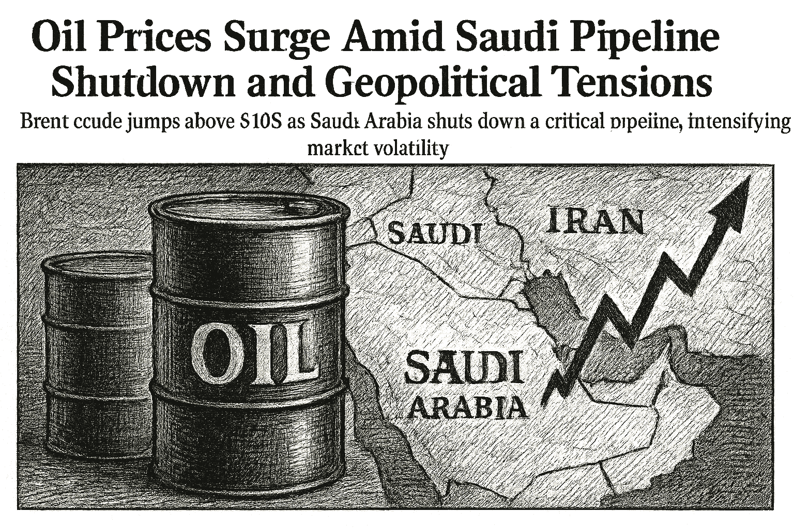

SPY
Current: $760.52Change: -9.67 (-1.26%)
Updated:
Source: yahoo_chartFreshness: fresh


Brent crude jumps above $108 as Saudi Arabia shuts down a critical pipeline, intensifying market volatility.

Today's Headline: Oil Prices Surge Amid Saudi Pipeline Shutdown and Geopolitical Tensions
Setup: Brent crude jumps above $108 as Saudi Arabia shuts down a critical pipeline, intensifying market volatility.
Primary Topic: Oil Prices
Specific Development: Brent crude has surged above $108 following the shutdown of Saudi Arabia's East-West pipeline after a drone strike, raising concerns over supply disruptions amid ongoing geopolitical tensions.
Why Today Is Different: This development marks a significant escalation in the already volatile oil market, potentially impacting inflation and economic growth forecasts.
Secondary Topics: Geopolitical Tensions; Market Volatility
Tone: urgent
Sectors: Energy; Commodities
Commodities: Brent; WTI
Countries Or Regions: Saudi Arabia; Iran
Macro Themes: Inflation; Supply Chain Disruptions
Why This Story: The implications of rising oil prices could reverberate across various sectors, influencing investor sentiment and trading strategies.
Why This Matters: Broadcom Just Named Its Next Customer to Pass Google: Anthropic. Here's Why That Matters More Than the Earnings is the clearest current evidence-led frame for Joshua's observation-only review; missing facts remain explicit intelligence gaps.

Summary: Global markets are reacting to the surge in oil prices, with energy stocks gaining traction while tech stocks face pressure.
What Happened Overnight: Brent crude rose sharply, while major indices like SPY, QQQ, and IWM are down.
What Changed Materially: The shutdown of the Saudi pipeline has created new concerns over oil supply.
Which Assets Sectors Are Affected: Energy sector is benefiting, while tech and consumer discretionary sectors are under pressure.
Does It Look Like Noise Or A Real Regime Input: This appears to be a significant regime input due to geopolitical factors.
Why This Matters: Joshua can use verified cross-asset moves and deterministic risk context while keeping causation explicitly unresolved.

FDX Earnings Expectations — 2026-09-16, Time Unavailable
Consensus EPS: $4.05
Year-ago EPS: unavailable
Expected EPS growth: unavailable
Consensus revenue: $22.6B
Year-ago revenue: unavailable
Expected revenue growth: unavailable
Source: finnhub_earnings_calendar · As of: 2026-09-14T14:15:26.495291+00:00 · Freshness: current

- WOPR learning pipeline: Collecting samples
- Candidates evaluated 24h: 0
- Current gate: Evidence
- Notification ledger events in 24h: 4
- Pending orders created/canceled/filled/expired: 0/0/0/0
- Pending lifecycle interpretation: Pending-order cancellations have trackable reasons and no obvious rapid churn pattern.
- Portfolio risk: Label: High / Score: 100.0
- Latest intelligence gap report: intelligence_gap_report_2026-09-13.pdf
Why This Matters: The active gate is Evidence, so the key question is why candidates are stopping before approval, not how to force trades.

- Sentinel role: infrastructure and operational status only.
- State: ONLINE
- Last successful validation: 2026-09-14T14:16:24.350341+00:00
- Payloads accepted/rejected: 19322/0
- Node health score: 100
Why This Matters: Sentinel is ONLINE, so Joshua should use its context only to the extent the latest accepted pulse is fresh and authenticated.

CANDIDATES MOVING THROUGH JOSHUA'S INVESTMENT-REVIEW WORKFLOW
FROZEN DAILY BRIEF SNAPSHOT | 2026-09-14T14:11:57.681443+00:00
QUEUE SUMMARY | Investment Ready: 0 | Waiting for Price: 0 | Waiting for Evidence: 2 | Research Underway: 3 | Governance Hold: 4 | Monitor Only: 0
Investment-ready status: No candidates are currently Investment Ready.
#6 NVDA - Waiting for Evidence [Moved Down 5->6]
Joshua's Thesis: Positive thesis not yet established.
Why Waiting: Positioning gate failed.
Price: 211.38 now; 211.47 preferred entry
What Unlocks It: Clear valuation support; Evidence that the business quality matches the risk being taken; Independent evidence streams pointing the same way
Portfolio Fit: 0.0/100 — VERY LOW ↓
Portfolio Fit Drivers: projected Technology exposure 80.3%; projected AI infrastructure exposure 80.3%; candidate amount $100 vs $25 currently allocated
Candidate Risk: 100.0/100 — VERY HIGH ↑
Risk Drivers: projected Technology exposure 80.3%; projected AI infrastructure exposure 80.3%; candidate amount $100 vs $25 currently allocated
Next: Positioning status must no longer be warning. Owner: Joshua.
#8 AVGO - Research Underway [Moved Down 7->8]
Joshua's Thesis: Positive thesis not yet established.
Why Waiting: Research evidence is still being gathered.
Price: 348.05 now; 370.11 preferred entry
What Unlocks It: Clear valuation support; Evidence that the business quality matches the risk being taken; Independent evidence streams pointing the same way
Portfolio Fit: 0.0/100 — VERY LOW ↓
Portfolio Fit Drivers: projected Technology exposure 80.3%; projected AI infrastructure exposure 80.3%; candidate amount $100 vs $25 currently allocated
Candidate Risk: 100.0/100 — VERY HIGH ↑
Risk Drivers: projected Technology exposure 80.3%; projected AI infrastructure exposure 80.3%; candidate amount $100 vs $25 currently allocated
Next: Fill before expires_at while entry conditions remain valid. Owner: Columbo.
#10 QBTS - Waiting for Evidence [Moved Up 11->10]
Joshua's Thesis: Positive thesis not yet established.
Why Waiting: Waiting for the preferred entry price.
Price: 16.85 now; 20.10 preferred entry
What Unlocks It: Clear valuation support; Evidence that the business quality matches the risk being taken; Independent evidence streams pointing the same way
Portfolio Fit: 0.0/100 — VERY LOW
Portfolio Fit Drivers: projected Unclassified exposure 80.3%; projected Unclassified exposure 80.3%; candidate amount $100 vs $25 currently allocated
Candidate Risk: 100.0/100 — VERY HIGH
Risk Drivers: projected Unclassified exposure 80.3%; projected Unclassified exposure 80.3%; candidate amount $100 vs $25 currently allocated
Next: Fill before expires_at while entry conditions remain valid. Owner: Joshua.
#15 ANGX - Governance Hold [Moved Up 19->15]
Joshua's Thesis: Positive thesis not yet established.
Why Waiting: Governance gate has not cleared.
Price: 5.58 now; 4.71 preferred entry
What Unlocks It: Governance gate clears; Clear valuation support; Evidence that the business quality matches the risk being taken
Portfolio Fit: 0.0/100 — VERY LOW
Portfolio Fit Drivers: projected Unclassified exposure 80.3%; projected Unclassified exposure 80.3%; candidate amount $100 vs $25 currently allocated
Candidate Risk: 100.0/100 — VERY HIGH
Risk Drivers: projected Unclassified exposure 80.3%; projected Unclassified exposure 80.3%; candidate amount $100 vs $25 currently allocated
Next: Re-evaluate after the recorded gate clears. Owner: Advisory Committee.
#19 PLTR - Governance Hold [Moved Down 18->19]
Joshua's Thesis: Positive thesis not yet established.
Why Waiting: Governance gate has not cleared.
Price: 167.36 now; 167.88 preferred entry
What Unlocks It: Governance gate clears; Clear valuation support; Evidence that the business quality matches the risk being taken
Portfolio Fit: 0.0/100 — VERY LOW ↓
Portfolio Fit Drivers: projected Technology exposure 80.3%; projected AI software exposure 80.3%; candidate amount $100 vs $25 currently allocated
Candidate Risk: 100.0/100 — VERY HIGH ↑
Risk Drivers: projected Technology exposure 80.3%; projected AI software exposure 80.3%; candidate amount $100 vs $25 currently allocated
Next: Re-evaluate after the recorded gate clears. Owner: Columbo.
#20 SPCX - Governance Hold [Moved Up 22->20]
Joshua's Thesis: Positive thesis not yet established.
Why Waiting: Governance gate has not cleared.
Price: 149.02 now; 146.33 preferred entry
What Unlocks It: Governance gate clears; Clear valuation support; Evidence that the business quality matches the risk being taken
Portfolio Fit: 0.0/100 — VERY LOW
Portfolio Fit Drivers: projected Unclassified exposure 80.3%; projected Unclassified exposure 80.3%; candidate amount $100 vs $25 currently allocated
Candidate Risk: 100.0/100 — VERY HIGH
Risk Drivers: projected Unclassified exposure 80.3%; projected Unclassified exposure 80.3%; candidate amount $100 vs $25 currently allocated
Next: Re-evaluate after the recorded gate clears. Owner: Advisory Committee.
#22 XRAY - Research Underway [NEW]
Joshua's Thesis: Positive thesis not yet established.
Why Waiting: Research evidence is still being gathered.
Price: 10.45 now; Preferred entry not established.
What Unlocks It: Clear valuation support; Evidence that the business quality matches the risk being taken; Independent evidence streams pointing the same way
Portfolio Fit: 0.0/100 — VERY LOW
Portfolio Fit Drivers: projected Unclassified exposure 80.3%; projected Unclassified exposure 80.3%; candidate amount $100 vs $25 currently allocated
Candidate Risk: 100.0/100 — VERY HIGH
Risk Drivers: projected Unclassified exposure 80.3%; projected Unclassified exposure 80.3%; candidate amount $100 vs $25 currently allocated
Next: Clear valuation support; Evidence that the business quality matches the risk being taken; Independent evidence streams pointing the same way. Owner: Columbo.
#24 DIA - Research Underway [Moved Down 20->24]
Joshua's Thesis: Positive thesis not yet established.
Why Waiting: Research evidence is still being gathered.
Price: Current price unavailable.; Preferred entry not established.
What Unlocks It: Clear valuation support; Evidence that the business quality matches the risk being taken; Independent evidence streams pointing the same way
Portfolio Fit: 0.0/100 — VERY LOW ↓
Portfolio Fit Drivers: projected ETF exposure 80.3%; projected Broad market exposure 80.3%; candidate amount $100 vs $25 currently allocated
Candidate Risk: 100.0/100 — VERY HIGH ↑
Risk Drivers: projected ETF exposure 80.3%; projected Broad market exposure 80.3%; candidate amount $100 vs $25 currently allocated
Next: Clear valuation support; Evidence that the business quality matches the risk being taken; Independent evidence streams pointing the same way. Owner: Columbo.
#25 RCL - Governance Hold [NEW]
Joshua's Thesis: Positive thesis not yet established.
Why Waiting: Governance gate has not cleared.
Price: 254.71 now; 282.98 preferred entry
What Unlocks It: Governance gate clears; Clear valuation support; Evidence that the business quality matches the risk being taken
Portfolio Fit: 0.0/100 — VERY LOW
Portfolio Fit Drivers: projected Unclassified exposure 80.3%; projected Unclassified exposure 80.3%; candidate amount $100 vs $25 currently allocated
Candidate Risk: 100.0/100 — VERY HIGH
Risk Drivers: projected Unclassified exposure 80.3%; projected Unclassified exposure 80.3%; candidate amount $100 vs $25 currently allocated
Next: Re-evaluate after the recorded gate clears. Owner: Columbo.
Since the prior Chronicle: UUUU - Removed
Observation only. This section creates no recommendation, order, authority, or execution instruction.

- If NVDA reaches the recorded price condition <= 211.47, which recorded evidence and governance requirements would still remain?
- If AVGO reaches the recorded price condition <= 370.11, which recorded evidence and governance requirements would still remain?
- If QBTS reaches the recorded price condition <= 20.1, which recorded evidence and governance requirements would still remain?
- Which recorded governance requirement must clear before ANGX can advance?
- What FDX EPS or revenue result would materially change the current recorded thesis?

The surge in oil prices due to geopolitical tensions is likely to impact inflation and economic growth forecasts. This could lead to a defensive rotation in portfolios as investors seek to mitigate risk.

Compared to: 2026-09-11
- Market weather: High -> Elevated
- Top opportunity: Still DELL
- Joshua gate: Learning trust -> Evidence
- 2Y Treasury.last_price: 4.63 -> 4.63 (unchanged); 2Y Treasury.last_price changed 0.00% versus the prior frozen Chronicle snapshot.
- 2Y Treasury.percent_change: 1.535087719298252 -> 1.535087719298252 (unchanged); 2Y Treasury.percent_change changed 0.00% versus the prior frozen Chronicle snapshot.
- 10Y Treasury.last_price: 4.96 -> 4.96 (unchanged); 10Y Treasury.last_price changed 0.00% versus the prior frozen Chronicle snapshot.
- 10Y Treasury.percent_change: 0.20202020202019771 -> 0.20202020202019771 (unchanged); 10Y Treasury.percent_change changed 0.00% versus the prior frozen Chronicle snapshot.
- 30Y Treasury.last_price: 5.35 -> 5.35 (unchanged); 30Y Treasury.last_price changed 0.00% versus the prior frozen Chronicle snapshot.
- 30Y Treasury.percent_change: -0.3724394785847386 -> -0.3724394785847386 (unchanged); 30Y Treasury.percent_change changed 0.00% versus the prior frozen Chronicle snapshot.
- SPY.last_price: 764.29 -> 760.52 (down); SPY.last_price changed 0.49% versus the prior frozen Chronicle snapshot.
- SPY.percent_change: -1.1485184370836938 -> -1.2555343486672212 (down); SPY.percent_change changed 9.32% versus the prior frozen Chronicle snapshot.
- QQQ.last_price: 714.88 -> 707.48 (down); QQQ.last_price changed 1.04% versus the prior frozen Chronicle snapshot.
- QQQ.percent_change: -0.3887580642913824 -> -1.5967508623567401 (down); QQQ.percent_change changed 310.73% versus the prior frozen Chronicle snapshot.
- IWM.last_price: 288.89 -> 288.55 (down); IWM.last_price changed 0.12% versus the prior frozen Chronicle snapshot.
- IWM.percent_change: -2.134218638842783 -> -2.520185128880774 (down); IWM.percent_change changed 18.08% versus the prior frozen Chronicle snapshot.

The urgency of the situation with rising oil prices and geopolitical tensions necessitates a reevaluation of market strategies.
No new warnings; however, the heightened volatility in oil markets should be closely monitored.
Portfolio Construction Review
Current allocation: 24.6 allocated.
Largest sector: Industrials at 100.0%.
Largest theme: Economic cycle at 100.0%.
Diversification: Concentrated (0.0).
Cash allocation: 97.5% unallocated.
Recommended exposure: DELL at portfolio-fit score 0.0.
Portfolio fit: DELL has strong standalone evidence, but it increases portfolio concentration.
Why This Matters: Portfolio Manager evaluates whether an opportunity improves this portfolio; it does not select the investment, vote, or authorize execution.

Monitor the implications of rising oil prices on inflation and sector performance closely.

| Can trigger trade | no |
| Can modify trade rules | no |
| Can add watch items | yes |
| Can add review questions | yes |
| Can adjust confidence notes | yes |
| Input policy | external_intelligence_plus_sanitized_internal_observations |
| External policy | The Editor-in-Chief synthesizes current world/market context where available and labels unknowns; provider/model provenance remains separate. |
| Internal policy | Joshua/WOPR/Sentinel facts are supplied as sanitized observation-only summaries. |
| Editorial model | gpt-4o-mini |
- Selected by a deterministic daily rotation through symbols already present in the persisted Chronicle snapshot.
- Related event on the canonical wire: Prediction: Micron's Sept. 30 Earnings Will Confirm the Memory Shortage Isn't Over
- Iraqi military commander dismissed after drone attacks against Saudi Arabia, prime minister's office says - Reuters
- Desk: geopolitical; source: Reuters; linked symbols: none recorded.
- Published: 9/11/26 15:07 MST.
- High-impact watch: Advance Monthly Sales for Retail and Food Services - 9/16/26 05:30 MST.
- Affected assets: US equities, Treasuries, USD; source: census_release_schedule.
- FDX earnings: September 16, 2026, time unknown.
- Energy: 2.86% session performance; source: persisted sector ledger.
- Communication Services: 1.78% session performance; source: persisted sector ledger.
- Consumer Staples: -0.24% session performance; source: persisted sector ledger.
- WTI: 8.68% recorded move; price: 104.39.
- Session: open; catalyst status: possible; source: yahoo_chart.
- Geopolitical Developments in the Middle East; why it matters: Continued tensions could exacerbate oil supply issues.
- State: narrow_leadership; score: 57.20/100; advance/decline ratio: 1.53.
- Above 50-day average: 42.90%; sample: 119; provider: sentinel_sampled_breadth.
- Decision outcomes evaluated: 16; currently untestable: 0.
- Warning review: still watching 2, unconfirmed 1; confidence calibration: insufficient_sample.
- Current macro regime: defensive_rotation; change probability: unavailable.
- Risk dashboard: cautious (63/100); breadth: narrow_leadership; sentiment: neutral.
- Scenario board only - a current-state observation, not a forecast or execution instruction.

- Produced a celebrated record managing Fidelity Magellan and taught generations of individuals how to research understandable growth companies.
- Published quotation: "The person that turns over the most rocks wins the game."
- Published framework: Start with companies you can understand, then verify the story through earnings, balance-sheet strength, valuation, competitive position, and a clearly stated reason the opportunity may be mispriced.
- Committee lens: Lynch asks Joshua for a plain-language company story and the fundamental evidence behind it, connecting real-world observation to valuation rather than to hype.
- Public philosophy profile only; no participation, endorsement, or current recommendation is implied.
- Which recorded governance requirement must clear before ANGX can advance?
- If NVDA reaches the recorded price condition <= 211.47, which recorded evidence and governance requirements would still remain?
- If AVGO reaches the recorded price condition <= 370.11, which recorded evidence and governance requirements would still remain?
- If QBTS reaches the recorded price condition <= 20.1, which recorded evidence and governance requirements would still remain?
- Which recorded governance requirement must clear before ANGX can advance?
- Proposed review: Brent Crude Prices; why it matters: A sustained rise could lead to inflationary pressures.
- Proposed review: Market Sentiment; why it matters: Shifts in sentiment could lead to broader market volatility.
- Canonical instruments reviewed: 24; delayed 3, fresh 18, stale 3.
- Leading sources: yahoo_chart (21), treasury_official_yield_curve (3).
- Snapshot recorded: 9/14/26 07:15 MST.
Oil Prices Surge Amid Saudi Pipeline Shutdown and Geopolitical Tensions
Storm meter: High
#6 NVDA - Waiting for Evidence [Moved Down 5->6]
Observation mode: observation_only
Watch: Brent Crude Prices; why it matters: A sustained rise could lead to inflationary pressures.
Question: If NVDA reaches the recorded price condition <= 211.47, which recorded evidence and governance requirements would still remain?